190 equations — 190 machine-verified, 0 flagged. Green = verified, amber = flagged (still shows best LaTeX + source crop).
| # | ID | Status | Rendered (KaTeX) | Source crop (PDF) |
|---|---|---|---|---|
| 1 | III-6-1 | agreed | $$\tau = \rho \ v \ \frac{\partial u}{\partial z}$$ | 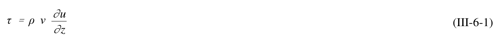 |
| 2 | III-6-2a | agreed | $$\tau = \rho \ V_T \frac{\partial u}{\partial z}$$ | 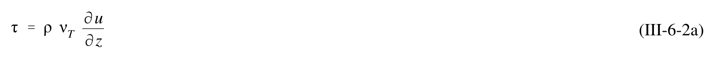 |
| 3 | III-6-2b | single_verified | $$\nu _ { T } = \kappa \ u _ { \ast } \ z$$ | 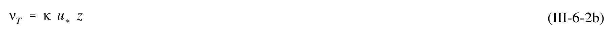 |
| 4 | III-6-3 | single_verified | $$u_c = \frac{u_{*c}}{\kappa} \ln \frac{z}{z_o}$$ | 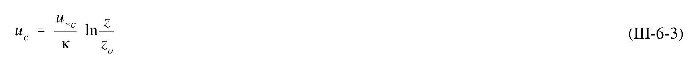 |
| 5 | III-6-4 | agreed | $$z_0 = \begin{cases} \frac{v}{9u_*} & \text{for smooth turbulent flow} \\ \frac{k_n}{30} & \text{for fully rough turbulent flow} \end{cases}$$ | 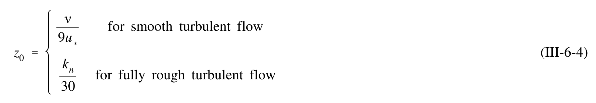 |
| 6 | III-6-5 | resolved | $$\frac{k_n u_*}{v} \ge 3.3 \quad \text{for fully rough turbulent flow}$$ | 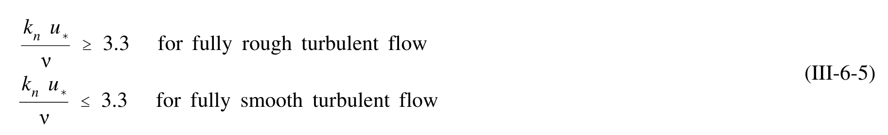 |
| 7 | III-6-6 | agreed_gt | $$\tau_c = \frac{1}{2} f_c \rho(u_c (z_r))^2$$ | 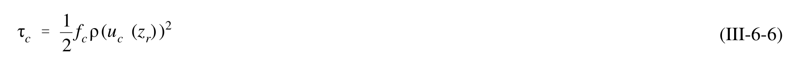 |
| 8 | III-6-7 | agreed | $$u_{*c} = \sqrt{\frac{\tau_c}{\rho}} = \sqrt{\frac{f_c}{2}} u_c(z_r)$$ | 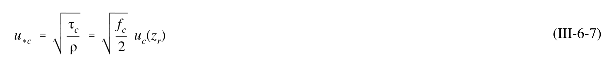 |
| 9 | III-6-8 | agreed | $$\frac{1}{4\sqrt{f_c}} \approx \log_{10} \frac{z_r}{z_0}$$ | 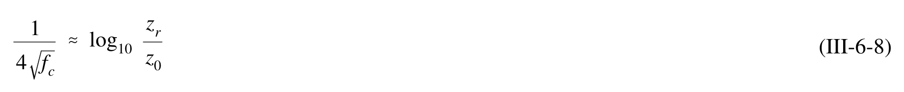 |
| 10 | III-6-10 | agreed_gt | $$z_0 = \frac{k_n}{30} = \frac{D}{30} = 6.67 \times 10^{-6} \text{ m} = 6.67 \times 10^{-4} \text{ cm}$$ | 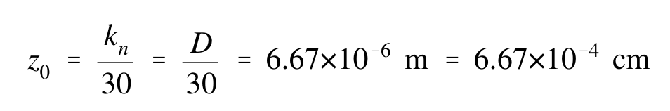 |
| 11 | III-6-11 | agreed_gt | $$f_c = 2.33 \times 10^{-3}$$ | 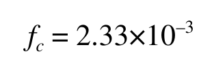 |
| 12 | III-6-12 | agreed_gt | $$u_{*c} = 1.19 \times 10^{-2} \text{ m/s} = 1.19 \text{ cm/s}$$ | 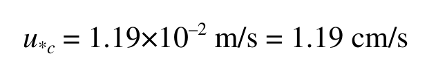 |
| 13 | III-6-13 | agreed | $$\frac{k_n u_{*c}}{v} = \frac{Du_{*c}}{v} = 2.38 < 3.3$$ | 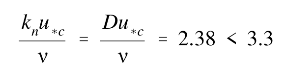 |
| 14 | III-6-14 | agreed | $$z _ { 0 } \, = \, \frac { \nu } { 9 u _ { \ast c } } \, \approx \, 9 . 3 { \times } 1 0 ^ { - 6 } \, \mathrm { m }$$ | 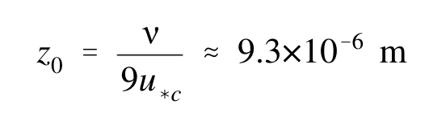 |
| 15 | III-6-15 | agreed_gt | $$f_c = 2.47 \times 10^{-3}$$ | 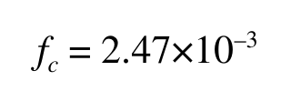 |
| 16 | III-6-16 | agreed | $$u_{*c} = 1.23 \times 10^{-2} \text{ m/s} = 1.23 \text{ cm/s} \text{ and } \tau_c = \rho u_{*c}^2 = 0.155 \text{ N/m}^2 \approx 0.16 \text{ Pa}$$ | 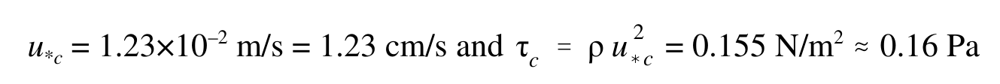 |
| 17 | III-6-9 | agreed | $$\frac{1}{4\sqrt{f_c}} + \log_{10} \frac{1}{4\sqrt{f_c}} = \log_{10} \frac{z_r u_c(z_r)}{v} + 0.20$$ | 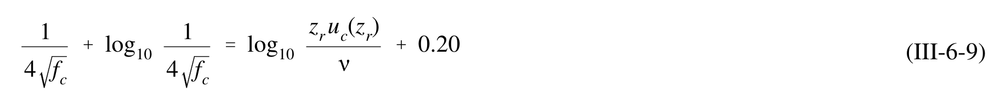 |
| 18 | III-6-10 | agreed | $$\tau_{w} = \rho v_{t} \frac{\partial u_{w}}{\partial z} = \rho \kappa u_{*wm} z \frac{\partial u_{w}}{\partial z}$$ | 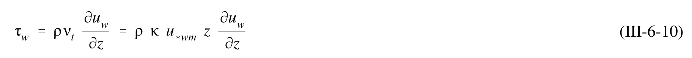 |
| 19 | III-6-11 | agreed | $$u_w = \frac{2}{\pi} \sin \varphi \ u_{bm} \ln \frac{z}{z_o} \cos(\omega t + \varphi)$$ | 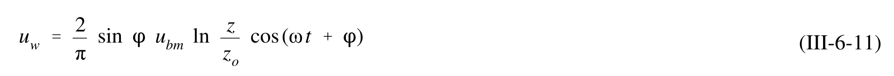 |
| 20 | III-6-12 | agreed | $$\tan \varphi = \frac{\frac{\pi}{2}}{\ln \frac{\kappa u_{*wm}}{z_o \omega} - 1.15}$$ | 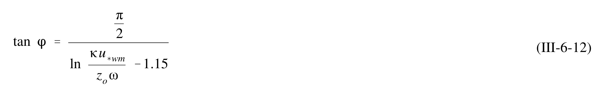 |
| 21 | III-6-13 | agreed | $$\tau_{w} = \tau_{\omega m} \cos(\omega t + \varphi)$$ | 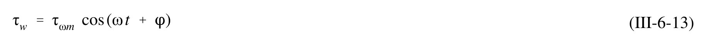 |
| 22 | III-6-14 | agreed_gt | $$\tau_{wm} = \frac{1}{2} f_w \rho u_{bm}^2$$ | 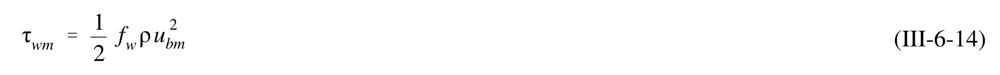 |
| 23 | III-6-15 | agreed | $$u_{*wm} = \sqrt{\frac{\tau_{wm}}{\rho}} = \sqrt{\frac{f_w}{2}} u_{bm}$$ | 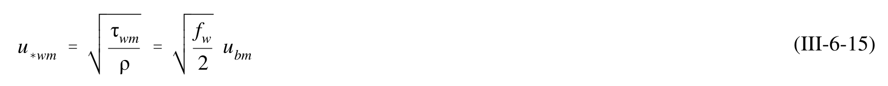 |
| 24 | III-6-16 | agreed | $$\kappa \sqrt{\frac{2}{f_w}} = \sqrt{\left(\ln \frac{\kappa \sqrt{\frac{f_w}{2}} u_{bm}}{z_0 \omega} - 1.15\right)^2 + \left(\frac{\pi}{2}\right)^2}$$ | 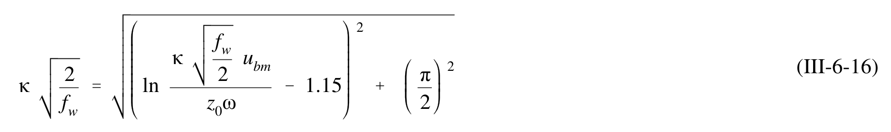 |
| 25 | III-6-17 | single_verified | $$A_{bm} = \frac{u_{bm}}{\omega}$$ | 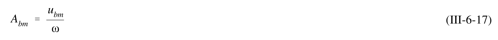 |
| 26 | III-6-18 | agreed | $$\frac{1}{4\sqrt{f_w}} + \log_{10} \frac{1}{4\sqrt{f_w}} = \log_{10} \frac{A_{bm}}{k_n} - 0.17 + 0.24 \left(4\sqrt{f_w}\right)$$ | 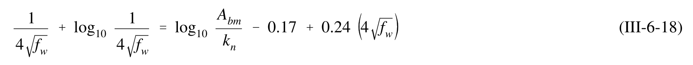 |
| 27 | III-6-19 | agreed | $$\frac{1}{4\sqrt{4f_w}} + \log_{10} \frac{1}{4\sqrt{4f_w}} = \log_{10} \sqrt{\frac{RE}{50}} - 0.17 + 0.06 \left(4\sqrt{4f_w}\right)$$ | 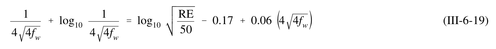 |
| 28 | III-6-20 | single_verified | $$\mathrm { R E } \ = \ { \frac { u _ { b m } \ A _ { b m } } { \nu } }$$ | 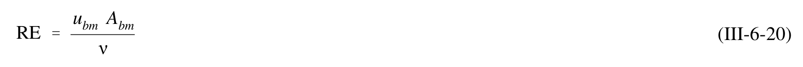 |
| 29 | III-6-21 | agreed_gt | $$f_w = \frac{2}{\sqrt{RE}}$$ | 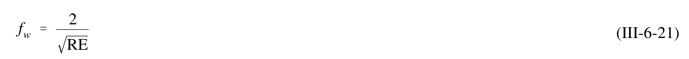 |
| 30 | III-6-22 | agreed_gt | $$\frac{1}{x^{(n+1)}} = \left(\log_{10} \frac{A_{bm}}{k_n} - 0.17\right) - \log_{10} \frac{1}{x^{(n)}} + 0.24x^{(n)}$$ | 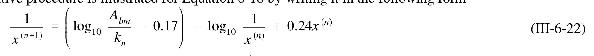 |
| 31 | III-6-23 | agreed | $$\delta_{w} = \frac{\kappa u_{*wm}}{\omega} = \kappa \sqrt{\frac{f_{w}}{2}} A_{bm}$$ | 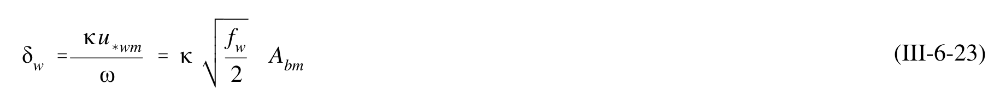 |
| 32 | III-6-24 | agreed | $$u_{w} = \frac{\sqrt{\frac{f_{w}}{2}} u_{bm}}{\kappa} \ln \frac{z}{z_{0}} \cos (\omega t + \varphi) = \frac{u_{*wm}}{\kappa} \ln \frac{z}{z_{0}} \cos (\omega t + \varphi)$$ | 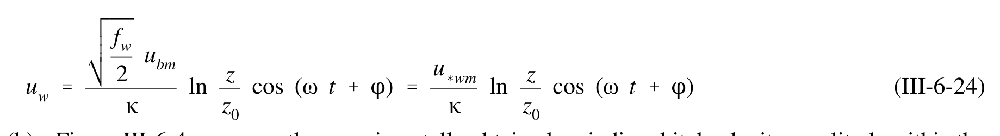 |
| 33 | III-6-33 | single_verified | $$\omega = 2\pi/T = 0.785\ \text{s}^{-1};\ A_{bm} = u_{bm}/\omega = 0.446\ \text{m} = 44.6\ \text{cm}$$ | 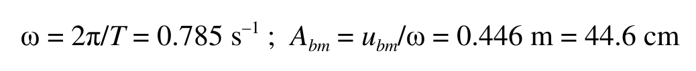 |
| 34 | III-6-34 | agreed_gt | $$\log_{10} \frac{A_{bm}}{k_n} - 0.17 = 3.48$$ | 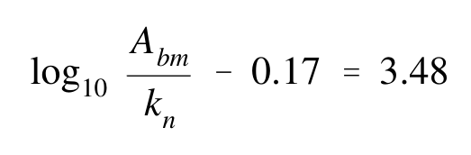 |
| 35 | III-6-35 | agreed_gt | $$f_w = (0.326/4)^2 = 6.64 \times 10^{-3}$$ | 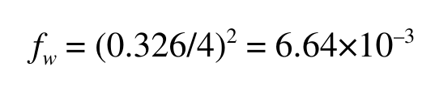 |
| 36 | III-6-36 | agreed | $$u_{*wm} = \sqrt{\frac{f_w}{2}} u_{bm} = 2.02 \times 10^{-2} \text{ m/s} = 2.02 \text{ cm/s}$$ | 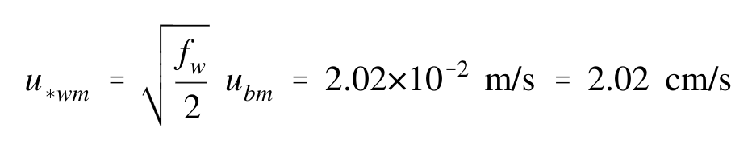 |
| 37 | III-6-37 | agreed | $$\frac{k_n u_{*wm}}{v} = 2.02 < 3.3$$ | 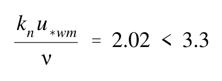 |
| 38 | III-6-38 | agreed_gt | $$\frac{1}{x^{(n+1)}} = \left(\log_{10} \sqrt{\frac{\text{RE}}{50}} - 0.17\right) - \log_{10} \frac{1}{x^{(n)}} + 0.06x^{(n)}$$ | 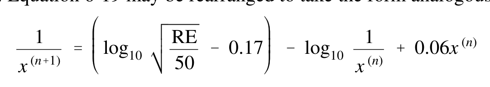 |
| 39 | III-6-39 | single_verified | $$\mathrm { R E } \, = \, \frac { u _ { b m } A _ { b m } } { \nu } \, = \, 1 . 5 6 { \times } 1 0 ^ { 5 }$$ | 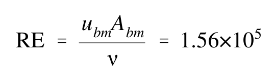 |
| 40 | III-6-40 | agreed_gt | $$\left(\log_{10}\sqrt{\frac{RE}{50}} - 0.17\right) = 1.58$$ | 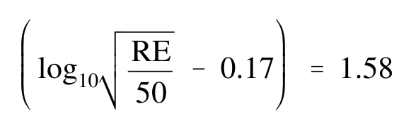 |
| 41 | III-6-41 | agreed_gt | $$f_w = 7.35 \times 10^{-3}$$ | 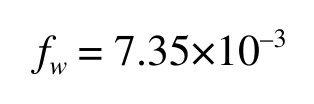 |
| 42 | III-6-42 | agreed | $$u_{*wm} = \sqrt{\frac{f_w}{2}} u_{bm} = 2.12 \times 10^{-2} \text{ m/s} = 2.12 \text{ cm/s}$$ | 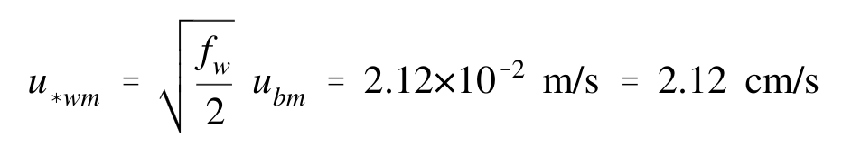 |
| 43 | III-6-43 | agreed_gt | $$\tau_{wm} = \rho (u_{*wm})^2 = 0.461 \text{ N/m}^2 = 0.46 \text{ Pa}$$ | 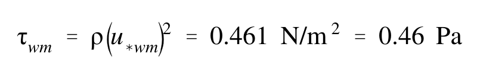 |
| 44 | III-6-44 | single_verified | $$z_0 = \frac{\nu}{9u_{*wm}} = 5.24 \times 10^{-6} \text{ m}$$ | 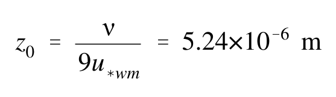 |
| 45 | III-6-45 | agreed | $$\tan \varphi = 0.242 arrow \varphi = 13.6^{\circ} \approx 14^{\circ}$$ | 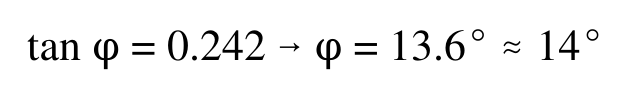 |
| 46 | III-6-25 | agreed | $$D_{p} = \frac{1}{4} \rho (f_{w} \cos \varphi) u_{bm}^{3}$$ | 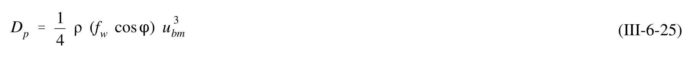 |
| 47 | III-6-47 | single_verified | $$\boldsymbol{\tau}_m = |\boldsymbol{\tau}_{wm} + \boldsymbol{\tau}_c|$$ | 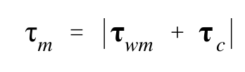 |
| 48 | III-6-26 | agreed | $$= \sqrt{(\tau_{wm} + \tau_c |\cos \varphi_{wc}|)^2 + (\tau_c \sin \varphi_{wc})^2}$$ | 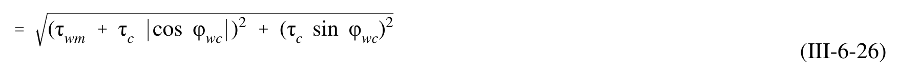 |
| 49 | III-6-49 | agreed | $$= \tau_{wm} \sqrt{1 + 2 \frac{\tau_c}{\tau_{wm}} \left| \cos \varphi_{wc} \right| + \left( \frac{\tau_c}{\tau_{wm}} \right)^2}$$ | 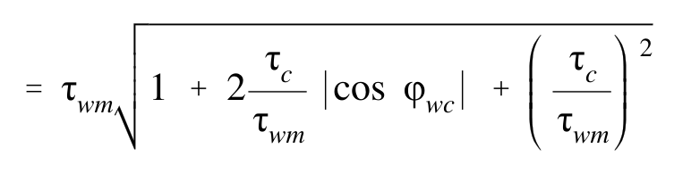 |
| 50 | III-6-27 | agreed | $$u_c = \frac{u_{*c}}{\kappa} \frac{u_{*c}}{u_{*m}} \ln \frac{z}{z_0}$$ | 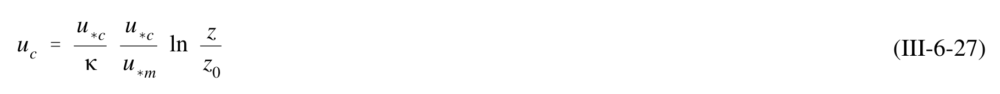 |
| 51 | III-6-28 | single_verified | $$u_c = \frac{u_{*c}}{\kappa} \ln \frac{z}{z_{0a}}$$ | |
| 52 | III-6-29 | agreed | $$u_c = \frac{u_{*c}}{\kappa} \left( \ln \frac{z}{\delta_{cw}} + \frac{u_{*c}}{u_{*m}} \ln \frac{\delta_{cw}}{z_0} \right)$$ | |
| 53 | III-6-30 | single_verified | $$\boldsymbol{u}_{c} = u_{c}(z) \left\{ \cos \varphi_{wc}, \sin \varphi_{wc} \right\}$$ | |
| 54 | III-6-31 | agreed | $$\tau_b(t) = \{\tau_{wm} \cos(\omega t + \varphi) + \tau_c \cos\varphi_{wc}, \tau_c \sin\varphi_{wc}\}$$ | |
| 55 | III-6-32 | agreed | $$\mu = \frac{\tau_c}{\tau_{wm}} = \frac{u_{*c}^2}{u_{*wm}^2}$$ | |
| 56 | III-6-33 | agreed_gt | $$C_{\mu} = \sqrt{1 + 2\mu \cos \varphi_{wc} + \mu^2}$$ | |
| 57 | III-6-34 | agreed | $$\frac { 1 } { 4 \sqrt { \frac { f _ { c w } } { C _ { \mu } } } } \ + \ \log _ { 1 0 } \frac { 1 } { 4 \sqrt { \frac { f _ { c w } } { C _ { \mu } } } } \ = \ \log _ { 1 0 } \frac { C _ { \mu } A _ { b m } } { k _ { n } } \ - \ 0 . 1 7 \ + \ 0 . 2 4 \left( 4 \sqrt { \frac { f _ { c w } } { C _ { \mu } } } \right)$$ | |
| 58 | III-6-35 | agreed | $$\frac { 1 } { 4 \sqrt { \frac { 4 f _ { c w } } { C _ { \mu } } } } + \log _ { 1 0 } \frac { 1 } { 4 \sqrt { \frac { 4 f _ { c w } } { C _ { \mu } } } } = \log _ { 1 0 } \sqrt { \frac { C _ { \mu } ^ { 2 } \mathrm { R E } } { 5 0 } } - 0 . 1 7 + 0 . 0 6 \left( 4 \sqrt { \frac { 4 f _ { c w } } { C _ { \mu } } } \right)$$ | |
| 59 | III-6-36 | agreed_gt | $$\frac{\tau_{wm}}{\rho} = u_{*wm}^2 = \frac{1}{2} f_{cw} u_{bm}^2$$ | |
| 60 | III-6-37 | agreed | $$\frac{\tau_m}{\rho} = u_{*m}^2 = C_{\mu} u_{*wm}^2$$ | |
| 61 | III-6-38 | agreed_gt | $$\delta_{cw} = \frac{\kappa u_{*m}}{\omega}$$ | |
| 62 | III-6-39 | agreed | $$\kappa u_{c}(z_{r}) = \ln \frac{z_{r}}{\delta_{cw}} u_{*c} + \frac{\ln \frac{\delta_{cw}}{z_{0}}}{u_{*m}} u_{*c}^{2}$$ | |
| 63 | III-6-63 | single_verified | $$f_{cw} = f_w = 7.86 \times 10^{-3}$$ | |
| 64 | III-6-64 | agreed | $$u_{*m} = \sqrt{C_{\mu}} u_{*wm} = u_{*wm} = \sqrt{\frac{f_{cw}}{2}} u_{bm} = 2.19 \times 10^{-2} \text{ m/s} = 2.19 \text{ cm/s}$$ | |
| 65 | III-6-65 | agreed_gt | $$\delta_{cw} = 1.12 \times 10^{-2} \text{ m} = 1.12 \text{ cm}$$ | |
| 66 | III-6-66 | agreed_gt | $$u_{*c} = 1.47 \times 10^{-2} \text{ m/s} = 1.47 \text{ cm/s}$$ | |
| 67 | III-6-67 | agreed | $$\mu = \left(\frac{u_{*c}}{u_{*wm}}\right)^2 = 0.45$$ | |
| 68 | III-6-68 | agreed_gt | $$\frac{1}{x^{(n+1)}} = \left(\log_{10} \frac{C_{\mu}A_{bm}}{k_n} - 0.17\right) - \log_{10} \frac{1}{x^{(n)}} + 0.24x^{(n)}$$ | |
| 69 | III-6-69 | agreed | $$u_{*wm} = \sqrt{\frac{f_{cw}}{2}} u_{bm} = 2.47 \times 10^{-2} \text{ m/s} = 2.47 \text{ cm/s} \text{ and } \tau_{wm} = \rho u_{*wm}^2 = 0.624 \text{ Pa}$$ | |
| 70 | III-6-70 | agreed | $$u_{*m} = \sqrt{C_\mu} \quad u_{*wm} = 2.88 \times 10^{-2} \text{ m/s} = 2.88 \text{ cm/s} \quad \text{and} \quad \tau_m = \rho u_{*m}^2 = 0.850 \text{ Pa}$$ | |
| 71 | III-6-71 | agreed_gt | $$\delta_{cw} = \frac{\kappa u_{*m}}{\omega} = 1.47 \times 10^{-2} \text{ m} = 1.47 \text{ cm}$$ | |
| 72 | III-6-72 | single_verified | $$u _ { * _ { c } } = 1 . 6 3 \times 1 0 ^ { - 2 } \, \mathrm { m / s } = 1 . 6 3 \, \mathrm { c m / s } \quad \mathrm { a n d } \quad \tau _ { \mathrm { c } } = \rho u _ { * c } ^ { 2 } = 0 . 2 7 2 \, \mathrm { P a }$$ | |
| 73 | III-6-73 | single_verified | $$\frac{A_{bm}}{k_n} = \frac{0.446}{0.044} \approx 10$$ | |
| 74 | III-6-74 | single_verified | $$f_{w} = f_{cw} \approx 0.058$$ | |
| 75 | III-6-75 | agreed | $$u_{*wm} = u_{*m} = \sqrt{\frac{f_w}{2}} \cdot u_{bm} = 5.96 \text{ cm/s}$$ | |
| 76 | III-6-76 | single_verified | $$\delta_{cw} = \frac{\kappa u_{*wm}}{\omega} = 3.04 \text{ cm}$$ | |
| 77 | III-6-77 | single_verified | $$u_{*c} = 2.84 \text{ cm/s}$$ | |
| 78 | III-6-78 | agreed | $$\mu = \left(\frac{u_{*c}}{u_{*wm}}\right)^2 = 0.23$$ | |
| 79 | III-6-79 | single_verified | $$C _ { \mu } = 1 . 1 7$$ | |
| 80 | III-6-80 | agreed | $$f_{cw}/C_{\mu} \approx 0.053 arrow f_{cw} \approx 0.062$$ | |
| 81 | III-6-81 | agreed_gt | $$u_{*wm} = 6.16 \text{ cm/s}, u_{*m} = 6.67 \text{ cm/s}, \delta_{cw} = 3.40 \text{ cm}$$ | |
| 82 | III-6-82 | agreed_gt | $$u_{*c} = 2.94 \text{ cm/s}$$ | |
| 83 | III-6-83 | agreed_gt | $$u_{*m} = 6.67 \text{ cm/s}, \, \tau_m = \rho u_{*m}^2 = 4.56 \text{ Pa}, \, \text{and } \delta_{cw} = 3.40 \text{ cm}.$$ | |
| 84 | III-6-84 | agreed | $$u_c(\delta_{cw}) = \frac{u_{*c}}{\kappa} \frac{u_{*c}}{u_{*m}} \ln \frac{\delta_{cw}}{z_0} = 10.2 \text{ cm/s}$$ | |
| 85 | III-6-85 | single_verified | $$u_c(\delta_{cw}) = \frac{u^*_{c}}{\kappa} \ln \frac{\delta_{cw}}{z_{0a}} \text{ and solving for } z_{0a} \text{ gives } z_{0a} = 0.85 \, \text{cm/s}$$ | |
| 86 | III-6-86 | agreed | $$\tan \varphi = 0.79 arrow \varphi = 38^{\circ}$$ | |
| 87 | III-6-40 | agreed | $$u_{*c} = u_{*m} \frac{\ln \frac{z_r}{\delta_{cw}}}{\ln \frac{\delta_{cw}}{z_0}} \left[ -\frac{1}{2} + \sqrt{\frac{1}{4} + \kappa \frac{u_c(z_r)}{u_{*m}} \frac{\ln \frac{\delta_{cw}}{z_0}}{\left(\ln \frac{z_r}{\delta_{cw}}\right)^2}} \right]$$ | |
| 88 | III-6-88 | agreed | $$\tau_b = \sum_{\substack{\text{unit} \\ \text{area}}} \overline{F}_{D, \text{grain}}$$ | |
| 89 | III-6-41 | single_verified | $$\bar { \bar { F } } _ { D , g r a i n } \propto \tau _ { b } \: D ^ { 2 }$$ | |
| 90 | III-6-42 | agreed | $$W_{grain} \propto (\rho_s - \rho)gD^3$$ | |
| 91 | III-6-43 | agreed_gt | $$\Psi = \frac{\tau_b}{(\rho_s - \rho)gD} = \frac{\tau_b}{(s - 1)\rho gD} = \frac{u_*^2}{(s - 1)gD}$$ | |
| 92 | III-6-44 | agreed | $$\mathrm { R e } _ { * } \ = \ \frac { u _ { * } k _ { n } } { \nu } \ = \ \frac { u _ { * } D } { \nu }$$ | |
| 93 | III-6-45 | agreed | $$\Psi _ { c r } = \frac { \tau _ { c r } } { ( s - 1 ) \ L \rho g D } = \frac { u _ { \ast c r } ^ { 2 } } { ( s - 1 ) g D } = f \mathrm { ( R e _ { \ast } ) }$$ | |
| 94 | III-6-46 | agreed | $$u_{*cr} = \sqrt{(s-1)gD} \sqrt{\psi_{cr}}$$ | |
| 95 | III-6-47 | agreed | $$S_{*} = \frac{D}{4v}\sqrt{(s-1)gD} = \frac{\operatorname{Re}_{*}}{4\sqrt{\psi_{cr}}}$$ | |
| 96 | III-6-48 | agreed | $$\psi_{cr} = 0.1 \text{Re}_{*}^{-1/3} \quad \text{for} \quad \text{Re}_{*} < 1$$ | |
| 97 | III-6-49 | agreed | $$\Psi _ { c r } = 0 . 1 S _ { * } ^ { - 2 / 7 } \mathrm { f o r } S _ { * } < 0 . 8$$ | |
| 98 | III-6-50 | agreed_gt | $$\psi_m = \frac{u_{*m}^2}{(s-1)gD} = \psi_{cr}$$ | |
| 99 | III-6-51 | single_verified | $$\psi_{cr,\beta} = \psi_{cr} \left\{ \cos \beta \left( 1 + \frac{\tan \beta}{\tan \varphi_s} \right) \right\}$$ | |
| 100 | III-6-100 | agreed | $$S_* = \frac{D}{4v}\sqrt{(s-1)gD} = 2.79$$ | |
| 101 | III-6-101 | agreed_gt | $$\psi_{cr} \approx 0.052$$ | |
| 102 | III-6-102 | agreed | $$u_{*cr} = \sqrt{(s-1)gD \ \psi_{cr}} = 1.27 \times 10^{-2} \ \text{m/s} = 1.27 \ \text{cm/s}$$ | |
| 103 | III-6-103 | agreed | $$\tau_{cr} = \rho(u_{*cr})^2 = 0.165 \text{ N/m}^2 \approx 0.17 \text{ Pa}$$ | |
| 104 | III-6-52 | agreed | $$\boldsymbol { \tau } _ { b } \ = \ \boldsymbol { \tau } _ { b } ^ { / } \ + \ \boldsymbol { \tau } _ { b } ^ { / / }$$ | |
| 105 | III-6-53 | agreed_gt | $$\tau_{wm}' = \frac{1}{2} \rho f_w' u_{bm}^2$$ | |
| 106 | III-6-54 | agreed_gt | $$k_n = k_n' = D$$ | |
| 107 | III-6-55 | single_verified | $$u _ { c } ( z _ { r } ) \mathrm { w i t h } z _ { r } = \delta _ { c w }$$ | |
| 108 | III-6-56 | agreed | $$\Psi _ { m } ^ { ' } \, = \, \frac { \tau _ { w m } ^ { ' } } { ( s - 1 ) \ L { \rho } g D } \, = \, \frac { { ( u _ { * w m } ^ { ' } ) } ^ { 2 } } { ( s - 1 ) g D }$$ | |
| 109 | III-6-57 | multi_verified | $$Z = \frac{\psi_m'}{S_+}$$ | |
| 110 | III-6-58 | agreed | $$\frac{\eta}{A_{bm}} = \begin{cases} 1.8 \times 10^{-2} \ Z^{-0.5} & 0.0016 < Z < 0.012 \\ 7.0 \times 10^{-4} \ Z^{-1.23} & 0.012 < Z < 0.18 \end{cases}$$ | |
| 111 | III-6-59 | agreed | $$\frac{\eta}{\lambda} = \begin{cases} 1.5 \times 10^{-1} \ Z^{-0.009} & 0.0016 < Z < 0.012 \\ 1.05 \times 10^{-2} \ Z^{-0.65} & 0.012 < Z < 0.18 \end{cases}$$ | |
| 112 | III-6-60 | single_verified | $$k_n = 4\eta$$ | |
| 113 | III-6-61 | agreed_gt | $$k_n = 15 \psi_m^{\prime} D$$ | |
| 114 | III-6-114 | agreed | $$u _ { \ast w m } ^ { \prime } = \sqrt { f _ { w } ^ { / } / 2 } u _ { b m } = 2 . 1 9 \times 1 0 ^ { - 2 } \mathrm { \, m / s } = 2 . 1 9 \mathrm { \, c m / s }$$ | |
| 115 | III-6-115 | agreed | $$\Psi _ { m } ^ { ' } \, = \, \frac { { \left( u _ { * w m } ^ { / } \right) } ^ { 2 } } { ( s \, - \, 1 ) g D } \, = \, 0 . 1 5 4$$ | |
| 116 | III-6-116 | agreed_gt | $$Z = \frac{\Psi_m'}{S_*} = 0.055$$ | |
| 117 | III-6-117 | agreed_gt | $$\frac{\eta}{A_{bm}} = 7 \times 10^{-4} Z^{-1.23} = 2.47 \times 10^{-2}$$ | |
| 118 | III-6-118 | agreed_gt | $$\eta = \frac{\eta}{A_{bm}} A_{bm} = 1.1 \text{ cm}$$ | |
| 119 | III-6-119 | agreed | $$\frac{\eta}{\lambda} = 1.05 \times 10^{-2} Z^{-0.65} = 6.91 \times 10^{-2} arrow \lambda = \frac{\eta}{(\eta/\lambda)} = 15.9 \text{ cm} \approx 16 \text{ cm}$$ | |
| 120 | III-6-120 | agreed_gt | $$k_n = 4\eta = 4.4 \text{ cm}$$ | |
| 121 | III-6-121 | single_verified | $$u _ { c } ( z _ { r } ) = 1 0 . 2 \, \mathrm { c m / s } \, \mathrm { a t } \, z _ { r } = \delta _ { c w } = 3 . 4 0 \, \mathrm { c m }$$ | |
| 122 | III-6-122 | agreed | $$u _ { * c } ^ { \mathrm { \, \tiny \, / \, } } = 0 . 9 6 \, \mathrm { c m / s }$$ | |
| 123 | III-6-123 | agreed_gt | $$f _ { c w } ^ { / } \, = \, 8 . 7 3 { \times } 1 0 ^ { - 3 }$$ | |
| 124 | III-6-124 | agreed | $$u_{*wm}^{'} = 2.31\ \text{cm/s};\quad u_{*m}^{'} = 2.48\ \text{cm/s}\quad\text{and}\quad\delta_{cw}^{'} = 1.26\ \text{cm}$$ | |
| 125 | III-6-125 | agreed | $$u _ { * c } ^ { \mathrm { \, \tiny \, / \, } } = \, 1 . 0 1 \, \mathrm { c m / s }$$ | |
| 126 | III-6-126 | agreed | $$u _ { * c } ^ { / } \, = \, 1 . 0 1 \, \mathrm { c m / s } \, , \, u _ { * w m } ^ { / } \, = \, 2 . 3 1 \, \mathrm { c m / s } \, , \, u _ { * m } ^ { / } \, = \, 2 . 4 8 \, \mathrm { c m / s }$$ | |
| 127 | III-6-127 | agreed | $$tan \; \phi' = 0.25 \; {\scriptstyle arrow} \; \phi' = 13.8^\circ \; \approx \; 14^\circ$$ | |
| 128 | III-6-62 | agreed_gt | $$\mu_b = \frac{\tan \beta}{\tan \phi_m} << 1$$ | |
| 129 | III-6-63 | agreed | $$\left( \frac { \overline { { { q } } } _ { s B } } { \sqrt { ( s - 1 ) g D } D } \right) _ { \ B } = \ 8 \ \left( \Psi _ { w m } ^ { / } \right) ^ { \frac { 3 } { 2 } } \ \overline { { { | \cos \ \theta | } ^ { \frac { 3 } { 2 } } \left\{ - \mu _ { b } , 0 \right\} } } \ = \ 4 . 5 \ \left( \Psi _ { w m } ^ { / } \right) ^ { \frac { 3 } { 2 } } \{ - \mu _ { b } , 0 \}$$ | |
| 130 | III-6-64 | agreed | $$\left(\frac{\bar{q}_{sB}}{\sqrt{(s-1)gDD}}\right)_{wc} = 6\left(\psi_c'\right)^2 \frac{u'_{wm}}{u'_c}\left\{\frac{3}{2}\cos\varphi_{wc},\sin\varphi_{wc}\right\}$$ | |
| 131 | III-6-65 | agreed_gt | $$\tan \varphi_{ws} = \frac{2}{3} \tan \varphi_{wc}$$ | |
| 132 | III-6-66 | agreed_gt | $$\mu_b = 2\mu$$ | |
| 133 | III-6-67 | agreed | $$\overline{q}_{sB} = \sum f_n \overline{q}_{sB,n}$$ | |
| 134 | III-6-134 | single_verified | $$\Psi _ { c } ^ { ' } \ = \ 0 . 0 3 3 { \mathrm { a n d } } \Psi _ { w m } ^ { ' } \ = \ 0 . 1 7$$ | |
| 135 | III-6-135 | agreed_gt | $$\left(\frac{\overline{q}_{sB}}{\sqrt{(s-1)gD}D}\right)_{wc} = 0.082 \left\{\frac{3}{2} \cos \varphi_{wc}, \sin \varphi_{wc}\right\}$$ | |
| 136 | III-6-136 | agreed_gt | $$(\overline{q}_{sB})_{wc} = \{9.7,6.5\} \times 10^{-3} \text{ cm}^{3}/(\text{cm s})$$ | |
| 137 | III-6-137 | agreed_gt | $$\left(\frac{\overline{q}_{sB}}{\sqrt{(s-1)gD}D}\right)_{\beta} = 0.32\{-\mu_b,0\}$$ | |
| 138 | III-6-138 | agreed | $$(\overline{q}_{sB})_{B} = \{-7.5,0\} \times 10^{-4} \text{ cm}^{3}/(\text{cm s})$$ | |
| 139 | III-6-139 | agreed | $$\overline{q}_{sB} = (\overline{q}_{sB})_{wc} + (\overline{q}_{sB})_{R} \approx \{9.0,6.5\} \times 10^{-3} \text{ cm}^{3}/(\text{cm s})$$ | |
| 140 | III-6-68 | single_verified | $$v_s = v_t = ku_* z$$ | |
| 141 | III-6-69 | agreed_gt | $$\left( \rho _ { s } \textrm { -- } \rho \right) g \left( \frac { \pi } { 6 } D ^ { 3 } \right) \ = \ \frac { 1 } { 2 } \rho \ C _ { D } \left( \frac { \pi } { 4 } D ^ { 2 } \right) \ w _ { f } ^ { 2 }$$ | |
| 142 | III-6-70 | agreed | $$\frac{w_f}{\sqrt{(s-1)gD}} = \sqrt{\frac{4}{3C_D}}$$ | |
| 143 | III-6-71 | agreed | $$\frac{w_f}{\sqrt{(s-1)gD}} = 1.82 \quad \text{for} \quad S_* > 300$$ | |
| 144 | III-6-72 | agreed | $$\frac{w_f}{\sqrt{(s-1)gD}} = \frac{2}{9}S_* \quad \text{for} \quad S_* < 0.8$$ | |
| 145 | III-6-73 | agreed | $$c_R = \gamma C_b \left( \frac{|\tau_b'(t)|}{\tau_{cr,\beta}} - 1 \right)$$ | |
| 146 | III-6-146 | agreed | $$S_* = \frac{D}{4v}\sqrt{(s-1)gD} = 2.79$$ | |
| 147 | III-6-147 | agreed | $$\frac{w_f}{\sqrt{(s-1)gD}} \approx 0.40$$ | |
| 148 | III-6-148 | single_verified | $$w_f = 2.23 \text{ cm/s}$$ | |
| 149 | III-6-74 | agreed | $$\gamma = \begin{cases} 2 \times 10^{-3} & \text{for rippled bed} \\ \\ 2 \times 10^{-4} & \text{for flat bed} \end{cases}$$ | |
| 150 | III-6-150 | single_verified | $$\bar{c}_{R} = \gamma C_{b} \left\{\frac{2}{\pi}\left(\frac{u'_{wm}}{u'_{cr}}\right)^{2}-1\right\}$$ | |
| 151 | III-6-151 | single_verified | $$\overline{c}_R = 1.44 \times 10^{-3} \text{ (cm}^3/\text{cm}^3)$$ | |
| 152 | III-6-152 | agreed | $$c_{Rwm} = \gamma C_b \left\{ \frac{4}{\pi} \left( \frac{u'_{*c}}{u_{*cr}} \right)^2 \cos \varphi_{wc} - \left( \frac{u'_{*wm}}{u_{*cr}} \right)^2 \frac{\tan \beta_w}{\tan \varphi_w} \right\}$$ | |
| 153 | III-6-153 | agreed_gt | $$c_{Rwm} = 0.65 \times 10^{-3} \text{ (cm}^3/\text{cm}^3\text{)}$$ | |
| 154 | III-6-154 | single_verified | $$z _ { R } = 7 D = 0 . 1 4 \: \mathrm { c m }$$ | |
| 155 | III-6-75 | agreed_gt | $$\overline{c}_R = \gamma \ C_b \left( \frac{2}{\pi} \frac{\tau'_{wm}}{\tau_{cr}} - 1 \right)$$ | |
| 156 | III-6-76 | single_verified | $$c_{Rw} = \gamma C_b \left( \frac{4}{\pi} \frac{\tau_c'}{\tau_{cr}} \cos \varphi_{wc} - \frac{\tau_{wm}'}{\tau_{cr}} \frac{\tan \beta_w}{\tan \varphi_m} \right) \cos \theta = c_{Rwm} \cos \theta$$ | |
| 157 | III-6-77 | agreed | $$\theta = \omega t + \varphi'$$ | |
| 158 | III-6-78 | agreed | $$v_s = \begin{cases} \kappa u_{*m} z & \text{if } z < \delta_{cw} \\ \kappa u_{*c} z & \text{if } z > \delta_{cw} \end{cases}$$ | |
| 159 | III-6-79 | agreed_gt | $$\delta_{cw} = \frac{\kappa u_{*m}}{\omega}$$ | |
| 160 | III-6-80 | single_verified | $$\overline { { c } } \, = \, \overline { { c } } _ { R } \left( \frac { z } { z _ { r } } \right) ^ { \mathrm { \, } \left( \, - \frac { w _ { f } } { \kappa u _ { \ast m } } \right) } \qquad \mathrm { f o r } \quad z < \delta _ { c w }$$ | |
| 161 | III-6-81 | agreed | $$\overline{c} = \overline{c}_R \left( \frac{\delta_{cw}}{z_r} \right)^{\left( -\frac{w_f}{\kappa u_{*m}} \right)} \left( \frac{z}{\delta_{cw}} \right)^{\left( -\frac{w_f}{\kappa u_{*c}} \right)} \quad \text{for} \quad z > \delta_{cw}$$ | |
| 162 | III-6-82 | agreed | $$c_{w} \approx c_{Rwm} \cos(\omega t + \varphi') - c_{Rwm} \frac{2}{\pi} \sin \varphi_{s} \ln \frac{z}{z_{r}} \cos(\omega t + \varphi' + \varphi_{s})$$ | |
| 163 | III-6-83 | agreed | $$\tan \varphi_s = \frac{\frac{\pi}{2}}{\ln \frac{\kappa u_{*m}}{z_r \omega} - 1.15}$$ | |
| 164 | III-6-84 | agreed | $$\overline{\boldsymbol{q}}_{SS,T} = \int_{z_r}^{h} \boldsymbol{u}_c \ \overline{c} \ dz + \int_{z_r}^{h} \overline{\boldsymbol{u}_w} \ c_w \ dz$$ | |
| 165 | III-6-85 | agreed | $$\overline{q}_{sS} = \int_{z_r}^{h} u_c \ \overline{c} \ dz$$ | |
| 166 | III-6-86 | agreed | $$\bar{q}_{sSw} = \int_{z_r}^{h} u_w c_w \ dz$$ | |
| 167 | III-6-87 | agreed | $$\overline{q}_{sS} = \frac{u_{*c}}{\kappa} \overline{c}_R \left(\frac{\delta_{cw}}{z_r}\right)^{\left(\frac{-w_f}{\kappa u_{*m}}\right)} \delta_{cw} (I_1 + I_2) \quad \text{for} \quad z_r > z_0$$ | |
| 168 | III-6-88 | agreed | $$I_{1} = \frac{\kappa u_{*c}}{\kappa u_{*m} - w_{f}} \left\{ \ln \frac{\delta_{cw}}{z_{0}} - \frac{\kappa u_{*m}}{\kappa u_{*m} - w_{f}} - \left( \frac{z_{r}}{\delta_{cw}} \right)^{\frac{\kappa u_{*m} - w_{f}}{\kappa u_{*m}}} \left( \ln \frac{z_{r}}{z_{0}} - \frac{\kappa u_{*m}}{\kappa u_{*m} - w_{f}} \right) \right\}$$ | |
| 169 | III-6-89 | agreed | $$I_{2} = \frac{\kappa u_{*c}}{\kappa u_{*c} - w_{f}} \left\{ \left( \frac{h}{\delta_{cw}} \right)^{\frac{\kappa u_{*c} - w_{f}}{\kappa u_{*c}}} \left( \ln \frac{h}{z_{0a}} - \frac{\kappa u_{*c}}{\kappa u_{*c} - w_{f}} \right) - \left( \ln \frac{\delta_{cw}}{z_{0a}} - \frac{\kappa u_{*c}}{\kappa u_{*c} - w_{f}} \right) \right\}$$ | |
| 170 | III-6-90 | agreed | $$u_{c} = \frac{u_{*c}}{\kappa} \frac{u_{*c}}{u_{*m}} \frac{\ln \frac{\delta_{cw}}{z_{0}}}{\ln \frac{\delta_{cw}}{z_{r}}} \ln \frac{z}{z_{r}} \quad \text{for} \quad z < \delta_{cw}$$ | |
| 171 | III-6-91 | agreed | $$\overline{q}_{sS} = \frac{u_{*c}}{\kappa} \overline{c}_R \left( \frac{\delta_{cw}}{z_r} \right)^{-\frac{w_f}{\kappa u_{*m}}} \delta_{cw} \left( I_3 + I_2 \right) \quad \text{for} \quad z_r < z_0$$ | |
| 172 | III-6-92 | agreed | $$I_{3} = \frac{\ln \frac{\delta_{cw}}{z_{0}}}{\ln \frac{\delta_{cw}}{z_{r}}} \frac{\kappa u_{*c}}{\kappa u_{*m} - w_{f}} \left\{ \ln \frac{\delta_{cw}}{z_{r}} - \frac{\kappa u_{*m}}{\kappa u_{*m} - w_{f}} \left[ 1 - \left( \frac{z_{r}}{\delta_{cw}} \right)^{\frac{\kappa u_{*m} - w_{f}}{\kappa u_{*m}}} \right] \right\}$$ | |
| 173 | III-6-173 | agreed | $$\frac{u_{*c}}{\kappa} \ \overline{c}_R \left( \frac{\delta_{cw}}{z_r} \right)^{-\frac{w_f}{\kappa u_{*m}}} \quad \delta_{cw} = 2.5 \times 10^{-3} \text{ cm}^{3/(\text{cm s})}$$ | |
| 174 | III-6-174 | agreed_gt | $$I_3 = \frac{3.12}{3.19} \times 2.68\{3.19 - 6.08[1 - 0.59]\} = 1.83$$ | |
| 175 | III-6-175 | agreed_gt | $$I_2 = -1.12[0.012(6.38 + 1.12) - (1.39 + 1.12)] = 2.71$$ | |
| 176 | III-6-176 | agreed_gt | $$\overline{q}_{sS} = 2.5 \times 10^{-3} (I_3 + I_2) = 1.1 \times 10^{-2} \text{ cm}^3/(\text{cm s})$$ | |
| 177 | III-6-93 | agreed | $$\bar{q}_{sSw} = \frac{1}{\pi^2}\sin\varphi\ u_{bm}\ c_{Rwm}\ \delta_{cw} \times\left(\cos(\varphi-\varphi')I_4 - \frac{2}{\pi}\sin\varphi_s\cos(\varphi-\varphi'-\varphi_s)I_5\right)\text{ for }z_0<z_r$$ | |
| 178 | III-6-94 | agreed_gt | $$I_4 = \ln \frac{\delta_{cw}}{\pi z_0} - 1 - \frac{\pi z_r}{\delta_{cw}} \left( \ln \frac{z_r}{z_0} - 1 \right)$$ | |
| 179 | III-6-95 | agreed_gt | $$I_{5} = \ln \frac{z_{r}}{z_{0}} \left( \ln \frac{\delta_{cw}}{\pi z_{r}} - 1 + \frac{\pi z_{r}}{\delta_{cw}} \right) + \left( \ln \frac{\delta_{cw}}{\pi z_{r}} \right)^{2} - 2 \ln \frac{\delta_{cw}}{\pi z_{r}} + 2 \left( 1 - \frac{\pi z_{r}}{\delta_{cw}} \right)$$ | |
| 180 | III-6-96 | agreed | $$\bar{q}_{sSw} = \frac{1}{\pi^2}\sin\varphi u_{bm}c_{Rwm}\delta_{cw}\frac{\ln\frac{\delta_{cw}}{\pi z_0}}{\ln\frac{\delta_{cw}}{\pi z_r}}\left(\cos(\varphi-\varphi')I_6 - \frac{2}{\pi}\sin\varphi_s\cos(\varphi-\varphi'-\varphi_s)I_7\right)$$ | |
| 181 | III-6-97 | agreed_gt | $$I_6 = \ln \frac{\delta_{cw}}{\pi z_r} - 1 + \frac{\pi z_r}{\delta_{cw}}$$ | |
| 182 | III-6-98 | agreed_gt | $$I_7 = \left(\ln \frac{\delta_{cw}}{\pi z_r}\right)^2 - 2 \ln \frac{\delta_{cw}}{\pi z_r} + 2 \left(1 - \frac{\pi z_r}{\delta_{cw}}\right)$$ | |
| 183 | III-6-183 | agreed | $$\varphi = 3 8 ^ { \circ } \quad { \mathrm { a n d } } \quad \varphi ^ { \prime } = 1 4 ^ { \circ }$$ | |
| 184 | III-6-184 | agreed | $$\tan \, \phi_s = 0.77 \, arrow \, \phi_s = 37.6^{\,\circ} \, \approx \, 38^{\,\circ}$$ | |
| 185 | III-6-185 | agreed_gt | $$c_{Rwm} = 0.65 \times 10^{-3}$$ | |
| 186 | III-6-186 | agreed | $$\frac{1}{\pi^2} \sin \varphi \ u_{bm} \ c_{Rwm} \ \delta_{cw} \ \frac{\ln \frac{\delta_{cw}}{\pi z_0}}{\ln \frac{\delta_{cw}}{\pi z_r}} = 5.0 \times 10^{-3} \ \text{cm}^{-3} / \text{(cm s)}$$ | |
| 187 | III-6-187 | agreed_gt | $$I_6 = 2.05 - 1 + 0.13 = 1.18$$ | |
| 188 | III-6-188 | agreed_gt | $$I_7 = 4.18 - 4.09 + 2(1 - 0.13) = 1.83$$ | |
| 189 | III-6-189 | agreed | $$\bar{q}_{ssw} = 5.0\times10^{-3}\left(1.18\cos{(38^\circ-14^\circ)} - 1.83\frac{2}{\pi}\sin{38^\circ}\cos{(38^\circ-14^\circ-38^\circ)}\right) = 1.9\times10^{-3} \text{ cm}^3/(\text{cm s})$$ | |
| 190 | III-6-190 | agreed | $$|\overline{q}_{sT}| = \sqrt{\overline{q}_{sT,x}^2 + \overline{q}_{sT,y}^2} = 2.4 \times 10^{-2} \text{ cm}^3/\text{(cm s)}$$ |